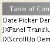
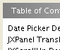
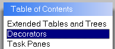

This page documents various enhancements (many of a visual nature) to be made to the SwingX components to render them:
| Before | After | Notes |
|---|---|---|
|  |  | JXList should include a MatteBorder who's background color is the same color as the JXList's background color (f.i., white by default for most LAF's). The MatteBorder serves to move the JXList's text away from the edges. |
|  |
There's a catch with using
borders: the selection does not extend to the boundaries of the JList
(which seems to be the native behaviour at least in win) - should check!
|